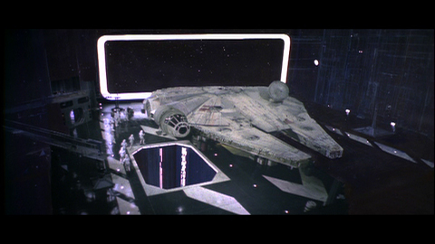
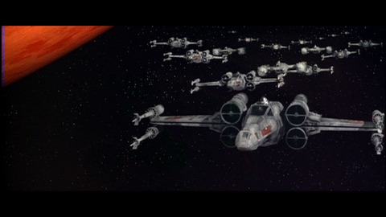
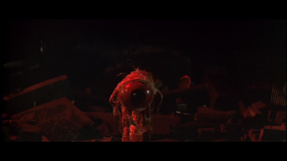

It is a period of civil war.
Rebel spaceships, striking
from a hidden base, have won
their first victory against
the evil Galactic Empire.
During the battle, Rebel
spies managed to steal secret
plans to the Empire's
ultimate weapon, the DEATH
STAR, an armored space
station with enough power
to destroy an entire planet.
Pursued by the Empire's
sinister agents, Princess
Leia races home aboard her
starship, custodian of the
stolen plans that can save her
people and restore
freedom to the galaxy....
Timeline
1981 | Theatrical re-release

The original 1977 theatrical crawl did not begin with an Episode title or number; these were added in the 1981 theatrical re-release.

The spacing of the words in the title crawl has changed to avoid single words on a line ending a paragraph. Also note that the capitalization of "Rebel" was fixed in the second paragraph so that it matches the first.

Another example of the 1981 reshuffling of the crawl to avoid ending a paragraph with a single word on a line.

The last paragraph of the crawl was left largely unchanged, though the spacing of the ellipsis has been widened to make the text more block-shaped.
1997 | Special Edition release
The original 1977 version of Star Wars began with the painted 20th Century Fox logo, which was updated in 1997 to the new digital logo that identified Fox as a News Corporation company.

The plain green Lucasfilm Limited card was replaced in 1997 with an animated presentation, though the 'new' logo had been in existence since before 1977.

The sky in the original 1977 version of this shot was changed to better match continuity with other shots in the desert sequence.

The original shot of the sandcrawler model was replaced with a new shot of the same model moving across a miniature landscape in 1997.
The original framing of this shot was scaled down, with the image area extended with a digital matte painting that added more vaporators and more sandcrawler than was practically built on location.
All the landspeeder hovering shots where enhanced in 1997 with more realistic digital shadows. The original 1977 versions had thick hand-animated shadows.
For this exterior shot, two digital dewbacks and a stormtrooper rider were added.

In 1997, the original matte painting of the Falcon was replaced with one that used a digital ship model as a foundation. Also, the Death Star hangar design was changed to match the one seen in Return of the Jedi.
Text.
In 1997, this scene was enlarged with a digital matte set and bluescreen-photographed and replicated extras as stormtroopers and Imperial officer.
The 1977 matte painting of the Yavin temple was replaced with a more realistically detailed digital one, complete with slowly opening hangar door and a second speeder. The foreground plants are the same.
The Special Edition replaced two separate shots witha n arcing camera move impossible to achieve with late 1970s motion control. It reversed the order of the shots as well.

The 1997 shot also included Yavin 4 in the background.
The S-foil separation shot was enhanced to include a greater sense of forward motion.
The shot of these Rebel ships fleeing from the doomed Death Star was made more dynamic in 1997.
The rather obvious matte painting soldiers in the foreground were replaced with digitally composited extras in 1997.
2004 | Special Edition DVD release
Text.
The 2004 Special Edition removed some occluding landscape from the famous twin sunset scene, to match continuity to the long shot which has an unobstructed view of the suns.
Text.

The original dianoga was enhanced in 2004 to feature a blinking and moving eye.

In 2004, the original English text on the tractor beam display was translated to Aurebesh, the Star Wars font.
2011 | Special Edition Blu-ray release
Luke's lightsaber color when training with the remote was fixed from green to blue.

Luke's lightsaber color when training with the remote was fixed from green to blue.